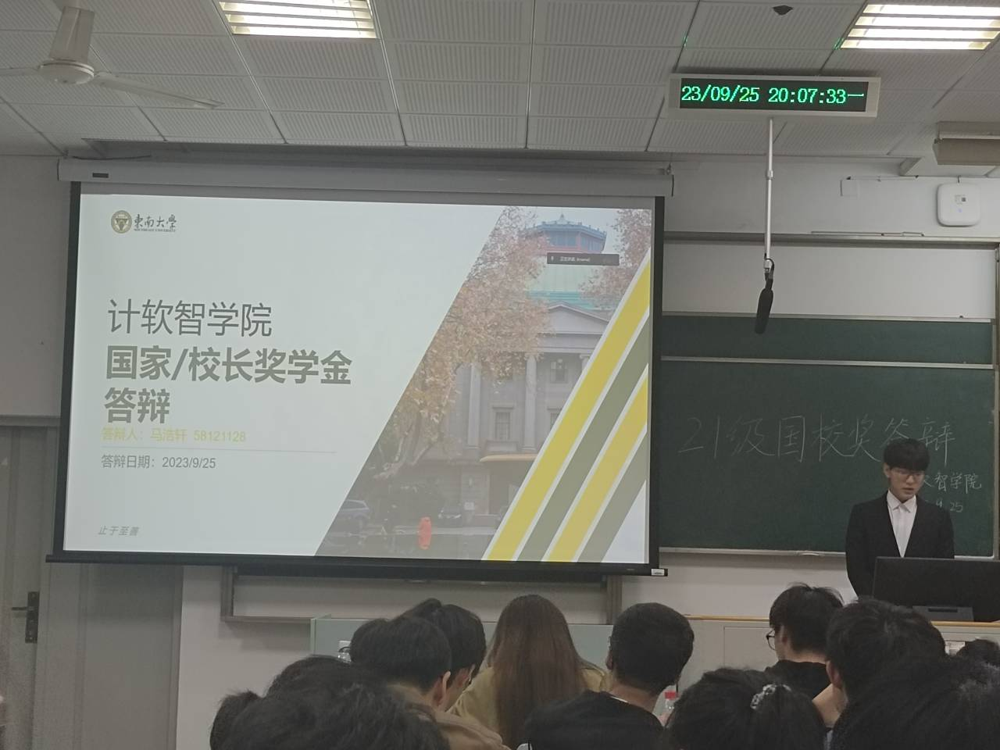
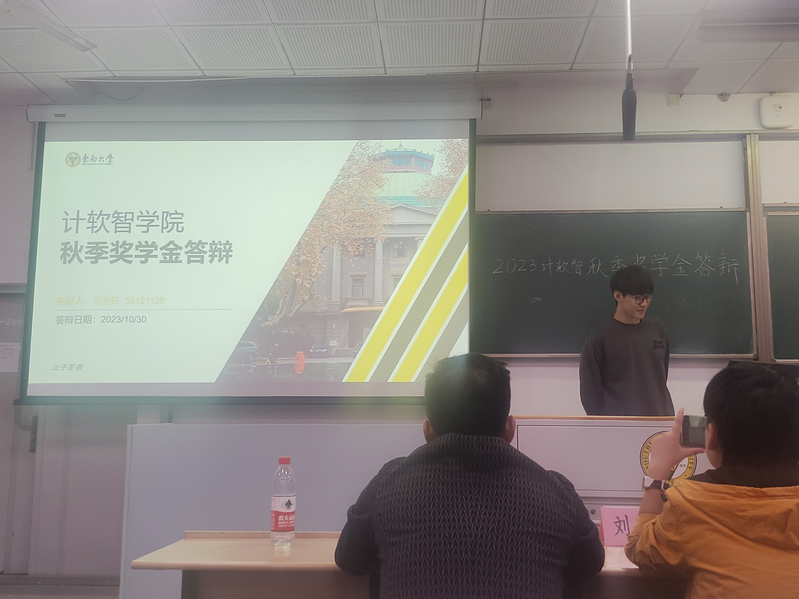
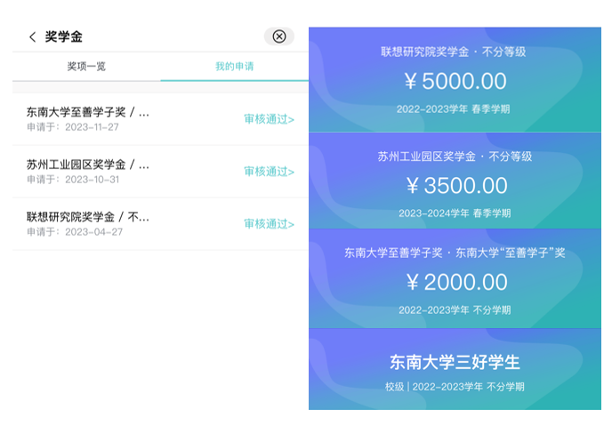
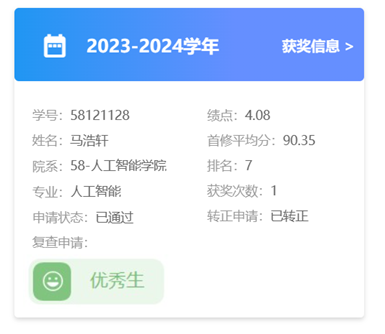
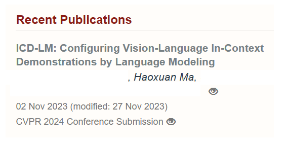

2023 年度总结
简单来讲，这一年里我都在被拒绝，无论是实习上的拒绝，还是科研进组上的拒绝，简单来讲还是自身的实力不够，而我也在尽力提升自己的实力。
首先，写在最前，要感谢这一年来帮助过我的所有人，让我这个人生的关键节点找准自己的方向。
如果说今年收获了什么，这一年我也收获了很多很多。
首先是学业上的，学习优秀生，至善学子奖学金，联想研究院奖学金，苏州工业园区奖学金，东南大学三好学生，但很遗憾以一名之差没有申上 国家奖学金，但是也参与了国校奖的答辩，穿上了大学的第一次西装。




在科研上，感谢杨老师与英哲学长的指导与帮助，让我在多模态这一领域进行了科研训练，体会到了科研的辛苦与乐趣，并在今年以三作投了一篇CVPR。 同时也要感谢王老师在zero-shot object detection上的指导，让我可以在自己感兴趣的一个领域里有自己的思考。

在竞赛上，今年也是在年底前晋级为一名Kaggle Expert(一银一铜)，银牌是经典Unet分割model做了一些改进优化，铜牌有些投机取巧ensemble了一些大神们的model。 通过Kaggle主要还是挺高了自己coding的能力，尤其是在模型复现与参数理解这一方面。希望能在2024年成为一名Kaggle Master，可以让自己的主页从紫色变成橙色。

何恺明教授在今年的采访中谈到，“科研中95%的时间是令人沮丧的。”
在6月份打Kaggle的时候通过评论区了解到了一个日本人和法国人组的队，发现他们的idea比较有趣，于是给法国队长发了一封Email，通过一些列交谈之后(实验环境，我的idea等等) 最后还是回复了一封“I'm sorry. Good Luck!”

在10月份的时候在Intel实习的一个同学把我内推给了他们的hr，但是在经过一面二面之后还是被挂了，总结一句原因就是个人能力不够。 在被问到用openmp加速矩阵运算的时候我连openmp是啥都不知道，另外一个方面虽然我本身也不是研究这一方面的，但是作为一个人工智能 专业的学生来说优化矩阵计算还是需要掌握的基础知识。
机会是自己争取的，在各个官网上都会发现南京的互联网实习少之又少，不想去前端，不会干后端，只想找一些自己能干的视觉算法实习。在11月份华为在 学校的线下招聘会成功加到了一个hr的vx，我也认识了一位三清的大牛，一面之后还是因为南京岗位少的原因，秋季的实习早已经停止挂了。
再之后...